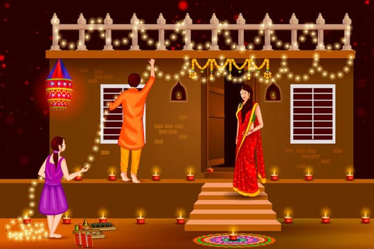
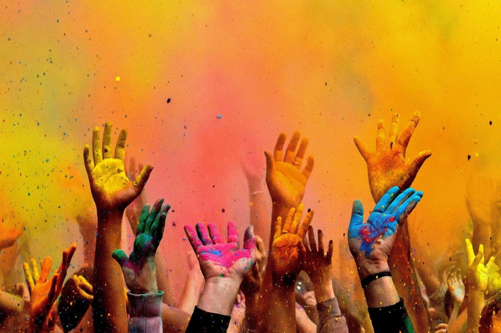
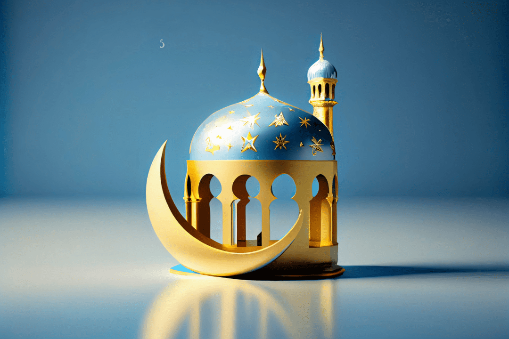
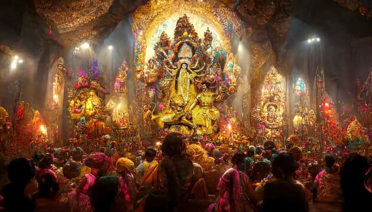
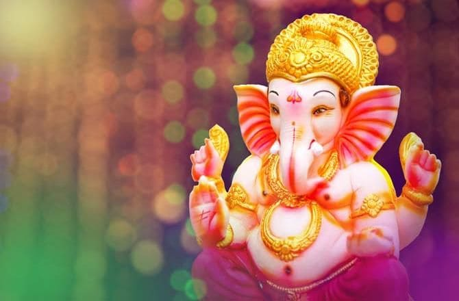

Festivals of India: Celebrating Unity in Diversity
Festivals in India are a vibrant celebration of the country's rich
cultural and religious tapestry, each marked by unique traditions,
rituals, and joyous gatherings. These festivals, deeply rooted in
history and mythology, offer a glimpse into the diverse spiritual and
cultural practices of the nation. Diwali, the festival of lights,
illuminates homes with lamps and fireworks, symbolizing the victory of
light over darkness. Holi, the festival of colors, brings people
together in a riot of hues and revelry, celebrating the arrival of
spring and the triumph of good over evil. Eid, celebrated by Muslims
across India, is marked by communal prayers, feasts, and the giving of
alms. Navratri, a nine-night festival dedicated to the goddess Durga,
features energetic dance performances and religious ceremonies. Each
festival, from the elaborate Ganesh Chaturthi celebrations to the serene
Buddha Jayanti, reflects the country’s deep-seated traditions and the
joyous spirit of its people.
Diwali

Diwali, also known as the Festival of Lights, is one of the most
important festivals in India. Celebrated by Hindus, Jains, Sikhs, and
some Buddhists, it marks the victory of light over darkness and good
over evil. The festival is observed with great enthusiasm across
India, typically lasting five days.
Origins: Diwali has its roots in several ancient
Indian legends. The most popular story is from the Hindu epic
Ramayana, where it celebrates Lord Rama's return to Ayodhya after 14
years of exile and his victory over the demon king Ravana. Another
legend involves Lord Krishna's victory over the demon Narakasura.
Celebrations: Homes are cleaned and decorated with
rangoli (colorful patterns made on the floor) and oil lamps (diyas).
People wear new clothes, perform Lakshmi Puja to honor the goddess
of wealth, and light fireworks. Sweets and gifts are exchanged among
friends and family. In some regions, the festival also marks the
beginning of a new financial year.
Significance: Diwali symbolizes the triumph of
light over darkness, knowledge over ignorance, and good over evil.
It is a time for introspection, renewing family bonds, and community
bonding.
Holi

Holi, the Festival of Colors, is a vibrant and joyous festival that
marks the arrival of spring and the end of winter. Celebrated by
Hindus across India, it is known for the playful throwing of colored
powders and water.
Origins: Holi's origins are rooted in Hindu
mythology. The festival commemorates the victory of Prince Prahlad
over his wicked aunt Holika, symbolizing the triumph of good over
evil. It is also associated with Lord Krishna's playful activities
with the gopis (milkmaids) in Vrindavan and Mathura.
Celebrations: The festivities begin on the night
before Holi with Holika Dahan, where bonfires are lit to signify the
burning of evil. The next day, people gather in open spaces to throw
colored powders, drench each other with water, and dance to music.
Special foods and drinks, such as gujiya (sweet dumplings) and
thandai (a spiced milk beverage), are prepared.
Significance: Holi promotes social harmony,
breaking down barriers of caste, creed, and social status. It is a
time to forgive and forget, mend broken relationships, and celebrate
the joy of life.
Eid

Eid, also known as Eid al-Fitr, is an important Islamic festival that
marks the end of Ramadan, the holy month of fasting. It is celebrated
with great enthusiasm by Muslims across India and the world.
Origins: Eid al-Fitr was instituted by the Prophet
Muhammad and is a day of gratitude to Allah for the strength and
patience shown during Ramadan. It is a time to give thanks for the
blessings received and to share them with others.
Celebrations: The day begins with a special prayer
(Salat al-Eid) at mosques or open grounds. People wear new clothes,
exchange greetings (Eid Mubarak), and visit friends and family.
Special dishes, such as biryani, kebabs, and sweets like sheer
khurma (a vermicelli pudding), are prepared and shared. It is also a
time for giving charity (Zakat al-Fitr) to help those in need.
Significance: Eid al-Fitr is a celebration of
faith, family, and community. It marks the culmination of a month of
self-discipline, spiritual reflection, and increased devotion. It is
a time to express gratitude, strengthen family bonds, and promote
social cohesion.
Christmas
Christmas is celebrated by Christians across India to commemorate the
birth of Jesus Christ. The festival is observed with great joy and
merriment, and it has also become a secular holiday celebrated by
people of various faiths.
Origins: Christmas marks the birth of Jesus Christ,
believed to be the Son of God, in Bethlehem. The exact date of his
birth is unknown, but December 25th was chosen to align with
existing midwinter celebrations.
Celebrations: Preparations begin with Advent, a
period of waiting and reflection. Churches are decorated, and
special services are held on Christmas Eve and Christmas Day. Homes
are adorned with Christmas trees, lights, and nativity scenes.
People exchange gifts, sing carols, and enjoy festive meals with
family and friends. Traditional foods include plum cake, roast
meats, and sweets like marzipan and kulkuls.
Significance: Christmas is a time to celebrate the
message of peace, love, and hope that Jesus Christ brought to the
world. It is an occasion for family gatherings, generosity, and
spreading joy and kindness.
Durga Puja

Durga Puja, also known as Durgotsav, is a major Hindu festival
celebrated primarily in West Bengal, Assam, Bihar, Jharkhand, Odisha,
and Tripura. It honors the goddess Durga's victory over the buffalo
demon Mahishasura, symbolizing the triumph of good over evil.
Origins: The festival's origins are rooted in Hindu
mythology, where Durga was created by the gods to defeat
Mahishasura. The festival also coincides with the harvest season,
adding an agricultural significance to the celebrations.
Celebrations: Durga Puja lasts for ten days, with
the last five days being the most significant. Elaborate pandals
(temporary structures) are set up, housing beautifully crafted idols
of Durga and her entourage. The celebrations include cultural
performances, traditional dances, music, and feasting. On the final
day, Vijaya Dashami, the idols are immersed in water bodies,
symbolizing Durga's return to her heavenly abode.
Significance: Durga Puja is not just a religious
festival but a cultural extravaganza that brings communities
together. It celebrates the power of good over evil and is a time
for artistic expression, community bonding, and joyous celebration.
Ganesh Chaturthi

Ganesh Chaturthi, also known as Vinayaka Chaturthi, is a Hindu
festival celebrating the birth of Lord Ganesha, the remover of
obstacles and the god of wisdom and prosperity. It is widely
celebrated in Maharashtra, Karnataka, Andhra Pradesh, and Tamil Nadu.
Origins: According to Hindu mythology, Ganesha was
created by Parvati from the sandalwood paste she used for bathing.
The festival marks his birth and his significance in Hinduism as the
god who removes obstacles.
Celebrations: The festival lasts for ten days,
beginning with the installation of clay idols of Ganesha in homes
and public pandals. Devotees perform daily prayers, sing hymns, and
offer sweets like modaks, believed to be Ganesha's favorite. The
festival concludes with the immersion of the idols in water bodies,
symbolizing Ganesha's